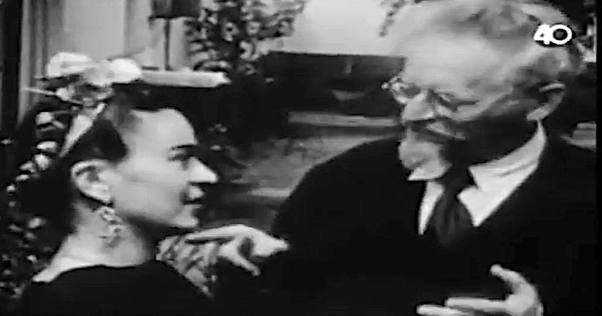

Художники Фрида Кало и Диего Ривера в гостях у Льва Троцкого в Мексике: старинные кадры 1938 года
Вот некоторые редкие кадры, на которых великие мексиканские художники Диего Ривера и Фрида Кало посещают изгнанного советского революционера Льва Троцкого и его жену Наталью Седову в Койоакане, Мексика, в 1938 году.
Троцкие прибыли за год до этого, после того, как Ривера обратился к правительству президента Ласаро Карденаса с просьбой предоставить спорному марксистскому лидеру и теоретическому убежищу в Мексике.
Когда …